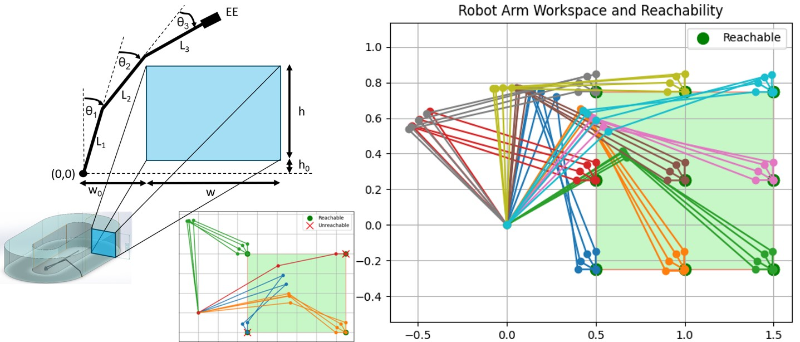
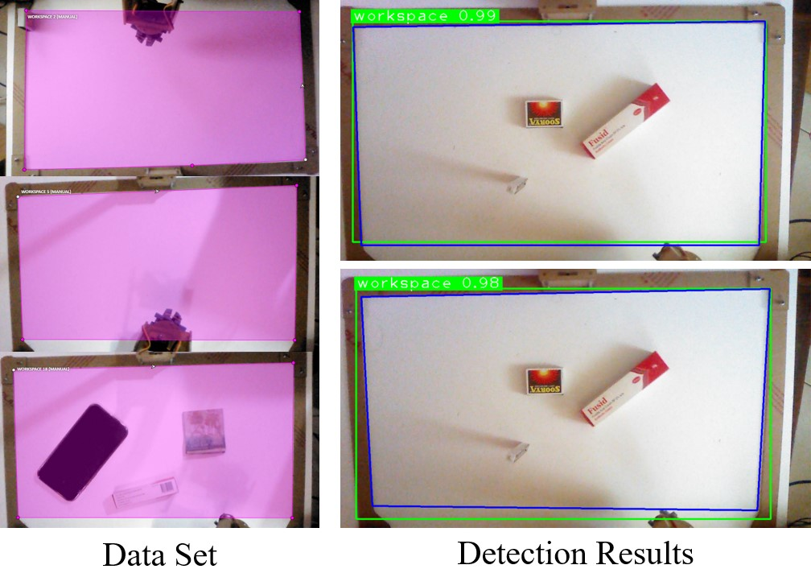
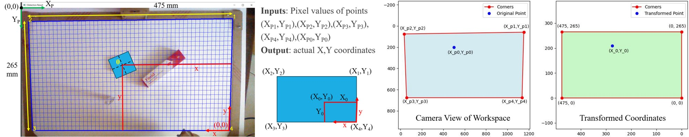
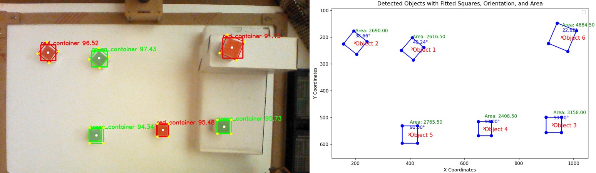
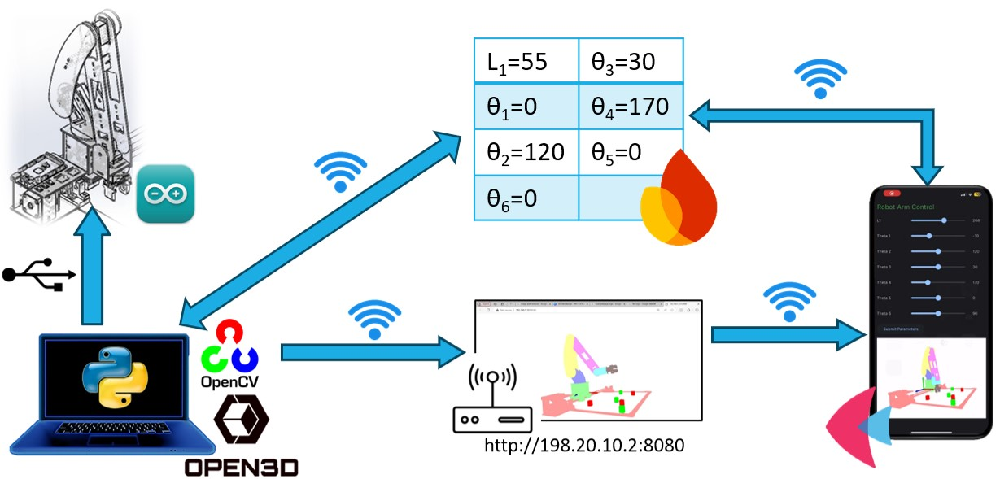

Design and Development of Rail Mounted 5DOF Robot Arm for Storage Applications
This project focuses on the end-to-end design and development of a custom 5-Degree-of-Freedom (DOF) robotic manipulator, physically mounted on a motorized linear rail to expand its operational workspace. The system is engineered as a fully integrated smart automation platform. It combines optimized mechanical hardware, a deep learning-based computer vision pipeline for autonomous object detection, and a cloud-connected mobile application that interfaces with a real-time digital twin of the robot for remote monitoring and teleoperation.
Mechanical Design & Optimization

The mechanical architecture was designed for warehouse picking applications. To maximize the end-effector's reach without compromising structural stability, the individual link lengths were optimized using a Particle Swarm Optimization (PSO) based algorithm. This ensured the defined workspace was fully accessible with desired orientations, while mathematically minimizing the required holding torques for the base actuators.
Prior to physical fabrication, detailed Multi-Body Dynamics (MBD) and Finite Element Analysis (FEA) were performed. Stress and topology analyses guided the final design, while torque analyses dictated the motor selection.
The entire manipulator assembly is mounted on a linear lead-screw rail mechanism, effectively providing a macro-scale 6th axis of mobility to service multiple storage racks along a horizontal plane.
Kinematics & Digital Twin Simulation

A comprehensive mathematical model of the robot was derived using geometric methods, establishing the forward and inverse kinematic frameworks necessary for the spatial positioning of the end-effector.
To safely validate motion planning algorithms, a real-time digital twin of the manipulator was developed. This simulation environment seamlessly visualizes the calculated Inverse Kinematics (IK) joint angles and physical constraints, allowing operators to verify trajectories before they are executed on the physical hardware.
Vision System & Deep Learning Pipeline
Autonomous object retrieval requires a robust environmental perception pipeline to dynamically locate unorganized storage containers and map them accurately into the robot's coordinate space.

Workspace Definition
The vision pipeline initiates by isolating the operational workspace. A camera calibration framework detects the corner markers of the storage plane to establish a foundational reference grid.
Object Detection via YOLOv8
A custom dataset was trained using the YOLOv8 segmentation model. The inference model provides real-time 2D bounding box detection and semantic segmentation of the target storage containers on the workspace surface.


Spatial Mapping & Orientation
To calculate physical grasping coordinates from a single monocular camera feed, the system employs Perspective Transformation (Homography). The 2D pixel coordinates of the detected containers are mathematically projected into the robot's real-world 3D base coordinate frame.
Simultaneously, geometric contour analysis calculates the yaw orientation of each container, ensuring the end-effector aligns with the object for secure pick-and-place maneuver.
Digital Twin Integration
Once detected and mapped, the physical target containers are dynamically instantiated inside the Open3D digital twin. This creates a synchronized virtual environment where the system can visualize its trajectories before interacting with the real world.
Control Architecture & Mobile Interface

Teleoperation and system monitoring are executed via a custom-built mobile application, developed in Python using the Flutter-based Flet framework with cross-platform compatibility.
The application utilizes the Google Firebase real-time database as its central communication hub. Because the backend relies on Firestore's real-time listeners, the physical robot, the Open3D digital twin, and the mobile GUI remain highly synchronized.
Teleoperation
Operators can use the app to submit specific joint parameters, initialize autonomous picking routines, and wirelessly stream manual control inputs directly to the physical hardware. The dual-controller setup (PC for heavy spatial processing, Arduino for low-level stepper stepping) ensures smooth, physical executions.